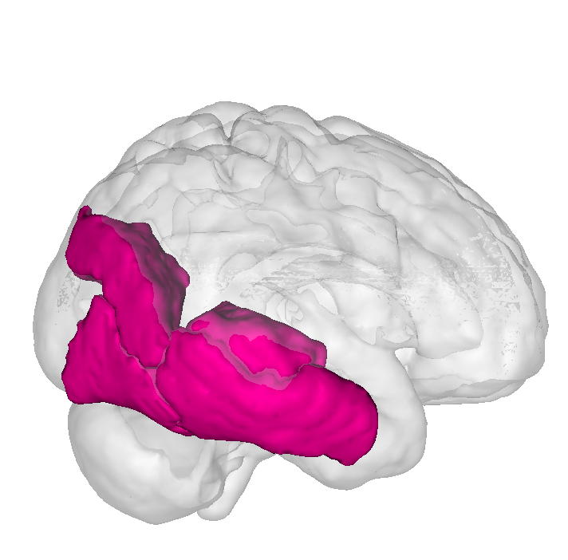
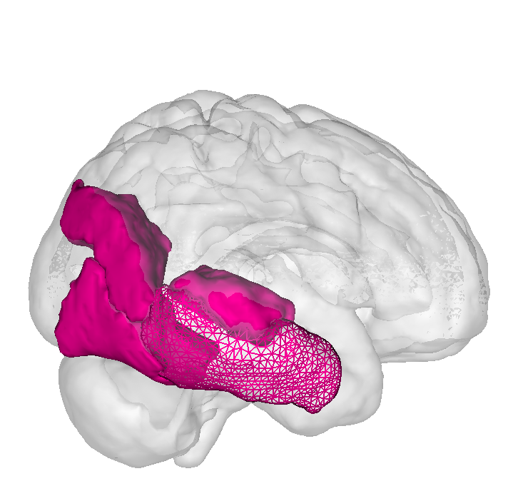
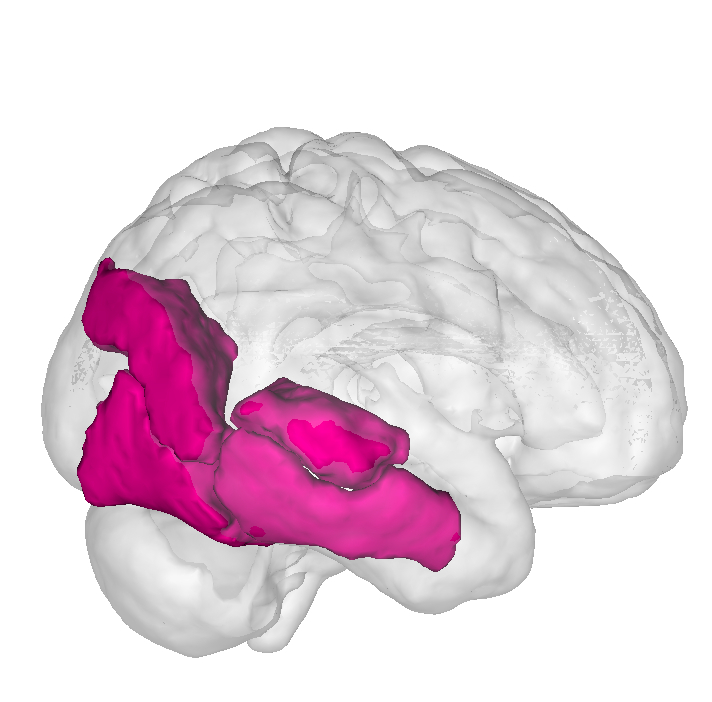
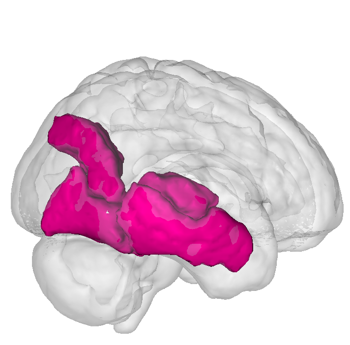
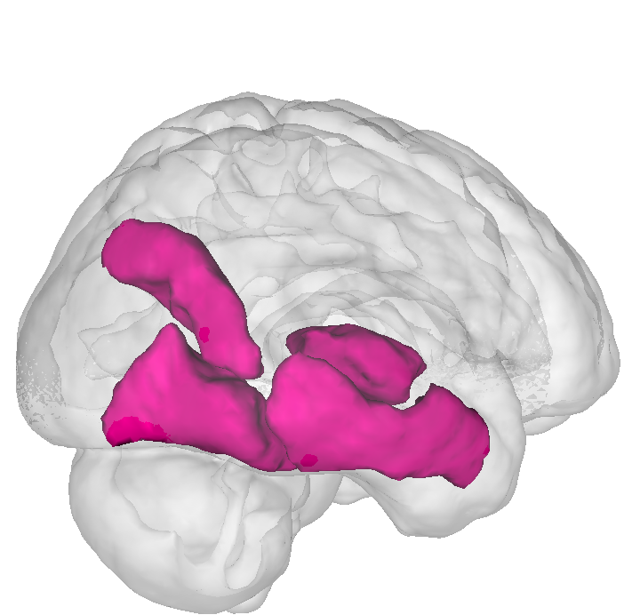

Erode a brain region of interest (ROI) using Python
The ROIs used in your analysis might be too close to each other and thus hard to distinguish. It can also happen that the ROI you got is not fitting inside the brain template you are using. But still, you want a pretty figure. Then, it might be a good idea to shrink your ROIs so that they appear more thin and they fit into the template which make the final figure way more pretty.
For example, if we plot the 4 ROIs as in the picture below. The ROIs appear very close to each other and do not fit into the MNI template.

You might want to make the separation between each ROI way more distinct. One solution is to erode the ROIs. Let's shrink only the ITG for now to get a clear example of shrinking.

Here is a short and efficient Python program to solve this problem
import nibabel as nib
from scipy import ndimage
# load the original nifti image
roi = nib.load(roi_path)
# extract data
roi_data = roi.get_data()
roi_data.shape # for this example (182, 218, 182)
# Erode the ROI
roi_shrinked_data = ndimage.binary_erosion(roi_data).astype(roi_data.dtype)
# build the nifti image of the new shape
roi_shrinked = nib.Nifti1Image(roi_shrinked_data, roi.affine, roi.header)
# save the file
nib.save(roi_shrinked, "roi_shrinked")
Et voilà ! Let's take a look at the new shape

Still not that great, it needs more shrinkage. We can simply add the argument "iterations=2" in the binary_erosion function such as:
# Iterate the shrinkage twice
roi_shrinked2_data = ndimage.binary_erosion(roi_data, iterations=2).astype(roi_data.dtype)
Now it fits into the template and looks way better!

Let's take a look at the different outputs we obtain if we apply the shrinkage to the 4 ROIs


If you have many ROIs to shrink, just glob.glob(*.nii) them and a for loop will do the boring job for you. You can simply download the source code to reproduce the erosion here.
I used Mango for the 3D brain (Mango website)
More info about ndimage.binary_erosion()
More info about nibabel nibabel